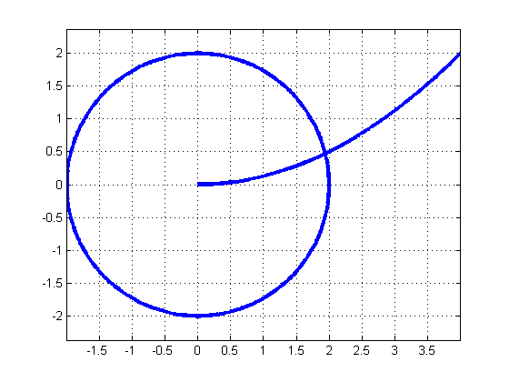

Contents
function Program_III_1
%Calculul Jacobianului simbolic
x = sym('x',[2,1]);
J = jacobian(F(x),x);
%Reprezentarea grafica a curbelor care descriu sistemul
t = linspace(0,2*pi,500);
R = 2;
Xcerc = R*cos(t);
Ycerc = R*sin(t);
plot(Xcerc,Ycerc,'Linewidth',3)
axis equal
grid on
Xparab = linspace(0,2*R,500);
Yparab = Xparab.^2/8.0;
hold on
plot(Xparab, Yparab,'linewidth',3)

%Afisare F si J
fprintf('Functia care descrie sistemul neliniar este:\n')
disp(F(x))
fprintf('Jacobianul functiei F este:\n')
disp(J)
Functia care descrie sistemul neliniar este:
x1^2 + x2^2 - 4
x1^2 - 8*x2
Jacobianul functiei F este:
[ 2*x1, 2*x2]
[ 2*x1, -8]
% Rezolvarea sistemului neliniar prin metoda Newton
x0 = [1 1];
eps = 10^(-6);
[xaprox, N] = Newton(@F, @Jacobian,x0,eps);
fprintf('Solutia sistemului neliniar este:\n')
format long
disp(xaprox)
fprintf('Numarul necesar de iteratii pentru obtinerea solutiei cu eroarea %f este:\n',eps)
disp(N)
plot(xaprox(1), xaprox(2),'ok','MarkerSize',10,'MarkerFaceColor','r')
plot(x0(1),x0(2),'ok','MarkerSize',10,'MarkerFaceColor','k')
openfig('Fig1.fig');
Solutia sistemului neliniar este:
1.943473087026597 0.472135954999579
Numarul necesar de iteratii pentru obtinerea solutiei cu eroarea 0.000001 este:
5
%Definirea functiei Jacobian calculat simbolic
function J = Jacobian(x)
x1 = x(1);
x2 = x(2);
J = [ 2*x1, 2*x2; 2*x1, -8];
end
%Definirea functiei F care descrie sistemul neliniar
function F = F(x)
F1 = x(1)^2 + x(2)^2 -4;
F2 = x(1)^2-8*x(2);
F=[F1;F2];
end
%Metoda Newton pentru rezolvarea sistemelor neliniare
function [xaprox,N] = Newton(F,J,x0,eps)
k = 0;
cond = 1;
x = x0;
while cond
k = k+1;
z = GaussPivTotala(J(x),-F(x));
x = x + z;
if norm(z,2)<eps
cond = 0;
end
end
xaprox = x; N = k;
end
%Metoda Gauss cu pivotare totala pentru rezolvarea sistemelor liniare
function [x]=GaussPivTotala(A,b)
A=[A,b];
n=size(A,1);
xindice=1:n;
for k=1:n-1
max=abs(A(k,k));
p = k; m = k;
for i = k:n
for j = k:n
if abs(A(i,j))> max
max=abs(A(i,j));
p = i; m = j;
end
end
end
if A(p,m) == 0
display('Sist. incomp. sau comp. nedet.');
return
end
if p~=k
A([p,k],:) = A([k,p],:);
end
if m~=k
A(:,[m,k]) = A(:,[k,m]);
xindice([m,k]) = xindice([k,m]);
end
for l=k+1:n
A(l,:) = A(l,:)-A(l,k)/A(k,k)*A(k,:);
end
end
if A(n,n) == 0
display('Sist. incomp. sau comp. nedet.')
return
end
xschimbat=SubsDesc(A(1:n,1:n),A(:,n+1));
for i = 1:n
x(xindice(i)) = xschimbat(i);
end
end
%Metoda substitutiei descendente pentru rezolvarea sistemelor de ecuatii inferior triunghiulare
function [x]=SubsDesc(A,b)
n=length(b);
x(n)=b(n)/A(n,n);
k=n-1;
while k>0
sum=0;
for j=k+1:n
sum=sum+A(k,j)*x(j);
end
x(k)=1/A(k,k)*(b(k)-sum);
k=k-1;
end
end
end